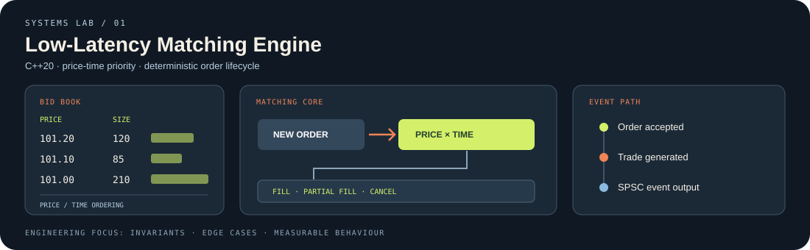
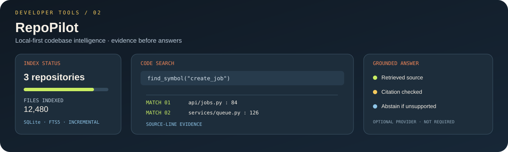
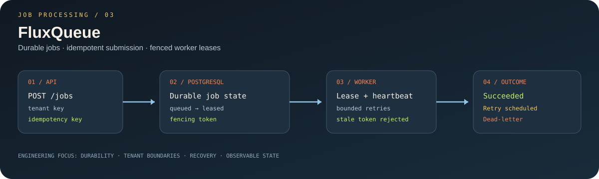
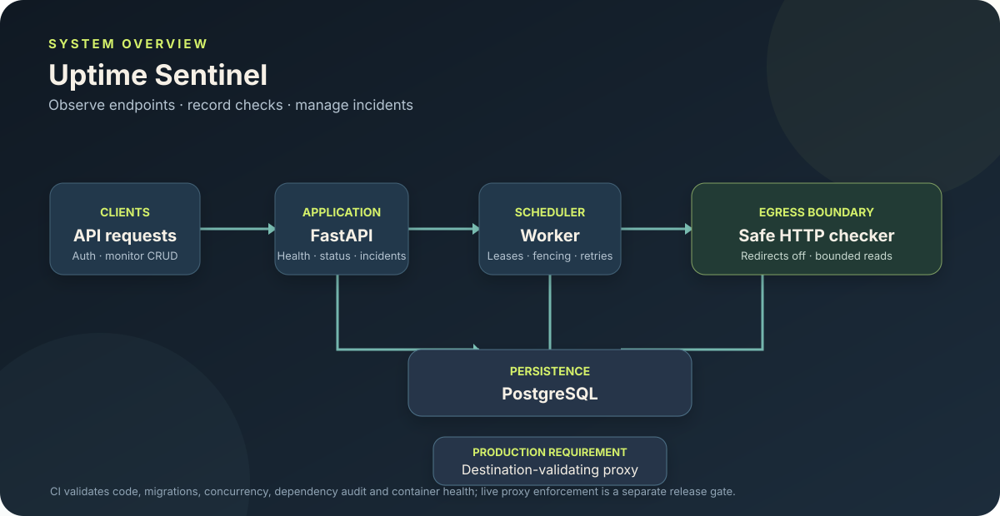
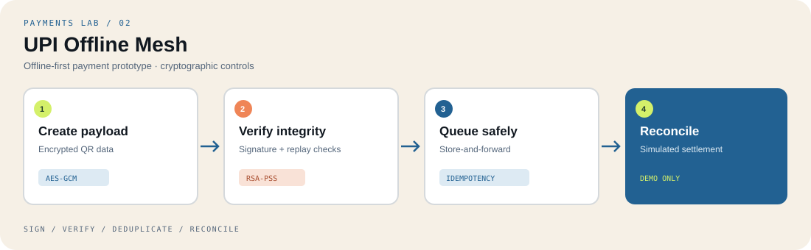
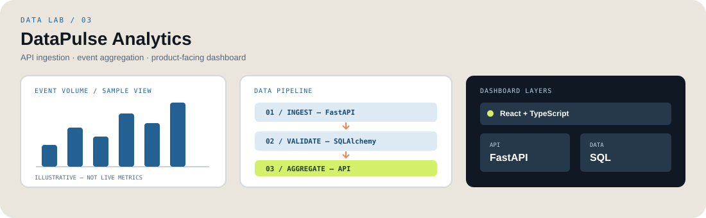

01 / SYSTEMS PROGRAMMINGC++20
Low-Latency Matching Engine
A limit-order-book prototype with price-time priority, full and partial fills, indexed cancellation, order lookup, and a bounded SPSC event path.
View repository ↗I’m Adi — a Mathematics & Computing student focused on backend platforms, systems engineering, and developer tools. I care about the details that make software reliable: clear invariants, useful tests, and evidence you can verify.


Ship it. Then verify it.I like problems where correctness, performance, and operational behavior all matter.
I’m pursuing an integrated M.Tech in Mathematics & Computing at IIT (ISM) Dhanbad, and building practical projects across C++, Python, APIs, databases, and developer tooling.
My approach is straightforward: make assumptions explicit, test the failure paths, measure real workloads, and document what the evidence does — and doesn’t — prove.
I’m looking for opportunities to contribute to software teams building dependable products and infrastructure.
A selection of engineering projects. Visuals are illustrative; each card links to the source repository and its verification history.

A limit-order-book prototype with price-time priority, full and partial fills, indexed cancellation, order lookup, and a bounded SPSC event path.
View repository ↗
A codebase exploration tool combining incremental indexing, symbol extraction, SQLite FTS5 retrieval, line-addressable evidence, an API, optional MCP tools, and a React dashboard.
View repository ↗
A durable job-processing platform with idempotent submission, tenant-scoped API keys, PostgreSQL persistence, worker leases, stale-token fencing, bounded retries, and dead-letter handling.
View repository ↗
A monitoring service for scheduled HTTP checks, latency and failure history, incident lifecycle tracking, a public status page, and a PostgreSQL-backed worker using shared leases and fencing.
View repository ↗
A backend payment prototype exploring authenticated encryption, RSA-PSS signatures, replay protection, and idempotent settlement through a simulated gateway.
View repository ↗
An event analytics demo with validated ingestion, SQLAlchemy persistence, metric and top-event aggregation, PostgreSQL migrations, and a React dashboard.
View repository ↗A closer look at the engineering questions behind the projects. These are guided entry points into the real repositories, not fabricated case-study metrics.
Explore price-time priority, partial fills, cancellation, and how a bounded event path changes the way a matching engine is reasoned about.
Follow the path from indexing and retrieval to line-addressable evidence, so an answer can point back to the code that supports it.
Inspect the monitoring workflow and the operational edge cases around timeouts, recovery, and making service health observable.
Grouped by how I use them across my current projects, not as a claim of equal depth in every tool.
Build the core. Connect the pieces. Verify the behavior.
The habits I try to carry from one project to the next.
Define state transitions, ownership, bounds, and idempotency guarantees before building the happy path.
Test retries, timeouts, stale leases, partial failure, duplicate requests, recovery, and cleanup.
Prefer source-linked evidence, reproducible tests, and explicit limitations over unsupported claims.
Record the environment and workload; distinguish local demonstrations from production guarantees.
Upstream work is labelled by its actual status so merged contributions are not confused with open proposals.
Open proposals focused on safer diagnostics, cleanup, runtime inspection, and framework detection.